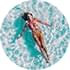

Попутчики
На главнуюФильтрация по странам:
| а | б | в | г | д |
| е | з | и | к | л |
| м | н | о | п | р |
| с | т | у | ф | х |
| ч | ш | э | ю | я |
Б
Подберите идеального попутчика
Результат подбора
 хочет посетить:
- Шри-Ланка
- Тайланд
- Сейшелы
транспорт:
- Авиаперелет
- Автотранспорт
- Велосипед
- Пешком
левел:
99
level
хочет посетить:
- Бельгия
- Чехия
транспорт:
- Авиаперелет
- Автотранспорт
- Велосипед
- Пешком
левел:
80
level
хочет посетить:
- США
- Австралия
- Доминика
транспорт:
- Авиаперелет
- Автотранспорт
- Велосипед
- Пешком
левел:
25
level

хочет посетить:
- Великобритания
- Германия
транспорт:
- Авиаперелет
- Автотранспорт
- Велосипед
- Пешком
левел:
50
level